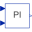

FirstOrderFirst order transfer function block (= 1 pole) |
Information
This information is part of the Modelica Standard Library maintained by the Modelica Association.
This blocks defines the transfer function between the input u and the output y as first order system:
k
y = ------------ * u
T * s + 1
If you would like to be able to change easily between different
transfer functions (FirstOrder, SecondOrder, ... ) by changing
parameters, use the general block TransferFunction instead
and model a first order SISO system with parameters
b = {k}, a = {T, 1}.
Example:
parameter: k = 0.3, T = 0.4
results in:
0.3
y = ----------- * u
0.4 s + 1.0
Parameters (4)
| k |
Value: 1 Type: Real Description: Gain |
|---|---|
| T |
Value: Type: Time (s) Description: Time Constant |
| initType |
Value: Modelica.Blocks.Types.Init.NoInit Type: Init Description: Type of initialization (1: no init, 2: steady state, 3/4: initial output) |
| y_start |
Value: 0 Type: Real Description: Initial or guess value of output (= state) |
Connectors (2)
| u |
Type: RealInput Description: Connector of Real input signal |
|
|---|---|---|
| y |
Type: RealOutput Description: Connector of Real output signal |
Used in Examples (4)
|
Modelica.Blocks.Examples Demonstrates the construction of an inverse model |
|
|
Modelica.Electrical.Machines.Examples.DCMachines Test example: DC with permanent magnet starting with current controller |
|
|
Modelica.Electrical.Machines.Examples.ControlledDCDrives Speed controlled DC PM drive with H-bridge from battery |
|
|
Modelica.Fluid.Examples Model of a pumping system for drinking water |
Used in Components (4)
|  |
Modelica.Blocks.Examples.NoiseExamples.Utilities.Parts Simple position controller for actuator |
|
Modelica.Electrical.Machines.Examples.ControlledDCDrives.Utilities DC-DC inverter |
|
|
Modelica.Electrical.Machines.Examples.ControlledDCDrives.Utilities Ideal DC-DC inverter |
|
|
Modelica.Electrical.PowerConverters.ACDC.Control PT1 + all-pass filter |